Liko - Creative agency & portfolio Next js Template Documentation
For any support please don't hesitate to contact us at Support Center. We provide 13 hours real-time support for our customers.
We would like to thank you for choosing Liko.
Getting started
Liko is an attractive Next js template specially designed for the multipurpose shops like mega store, grocery store, supermarket, organic shop, and online stores selling products like beverages, vegetables, fruits, ice creams, paste, herbs, juice, meat, cold drinks, sausages, cocktails, soft drinks.
Requirements
There are system requirements in order to install and setup Liko template and its components properly. Make sure that you are installed node.js and Yarn.
After purchasing Liko template on themeforest.net with your Envato account, go to your Download page. You can choose to download Liko template package which contains the following files:
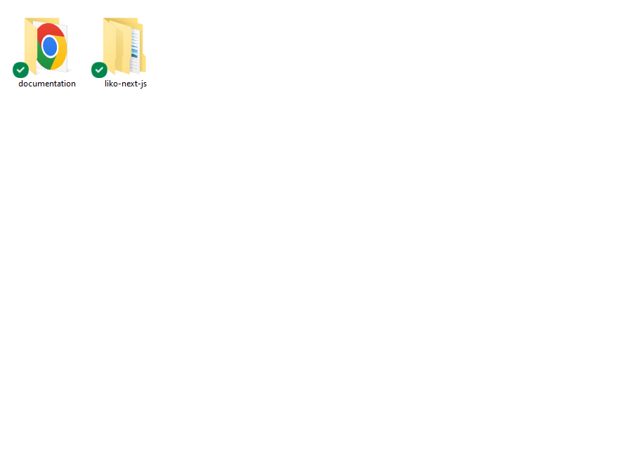
The contents of the template package downloaded from ThemeForest
Liko - An React Template file. this file you ca edit and use for your business.
Documentation - This folder contains what you are reading now :)
React Installation
Please follow the instructions in the video to see how
you can install react on your hosting:
For local host -
Open you command prompt
npm install or npm install --legacy-peer-deps
npm run dev (will start the dev server at
http://loaclhost:3000)
To deploy a Next.js application on Vercel, you can follow these steps: -
Sign up for an account on Vercel if you don't have one already.
Connect your GitHub, GitLab, or Bitbucket repository where your Next.js application is hosted.
Import your repository on Vercel and select the Next.js project to be deployed.
Vercel will automatically detect your Next.js application and perform the necessary build and deployment steps.
Once the deployment is complete, you'll be able to access your application using the URL provided by Vercel.
When you import your GitHub repository on vercel by creating a project, you will see
an option for Environment Variables, just click on that and give you a local .env all
variable with the value. then click on deploy. Note first you will need to import and
deploy backend, so that you can use that backend live url as shofy-client and shofy-server and shofy-admin base url. screenshot
Note: Make sure your Next.js application is set up properly, including the correct dependencies and environment variables. You may also need to configure your application to work with Vercel's platform.
Other Scripts
Open you command prompt
npm cache clear -f (for clear npm cache)
Basic Site Settings
Change Site Title, Favicon and Page Title
To change your Site title and Favicon open the Liko in your editor and go to the location by following screenshot which are given bellow.
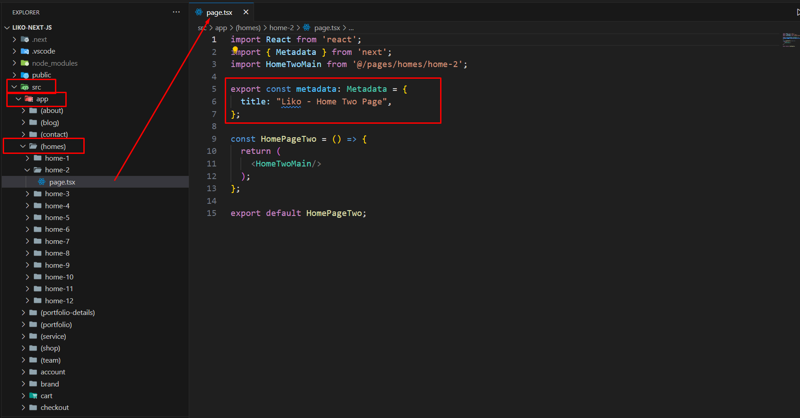
You can change page title here
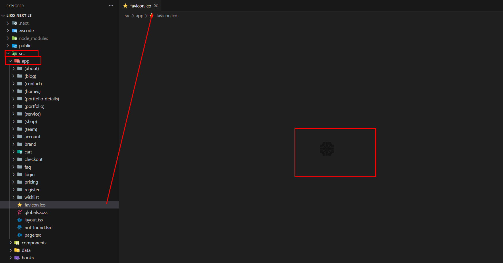
You can change favicon here
Change Logo
To change logo and customize other header data do the following:
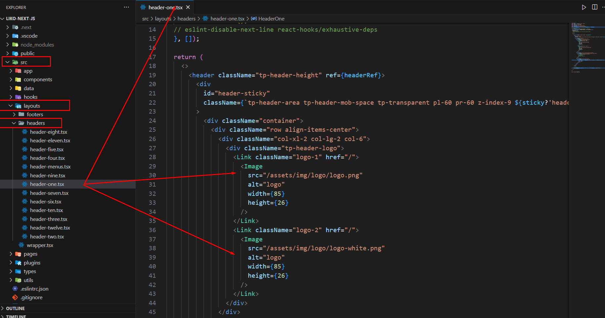
You can change logo here
Customize Menu
To customize menu do the following:
From the project folder go to src datamenu-data.tsOpen the menu you want to use
Then customize the menu
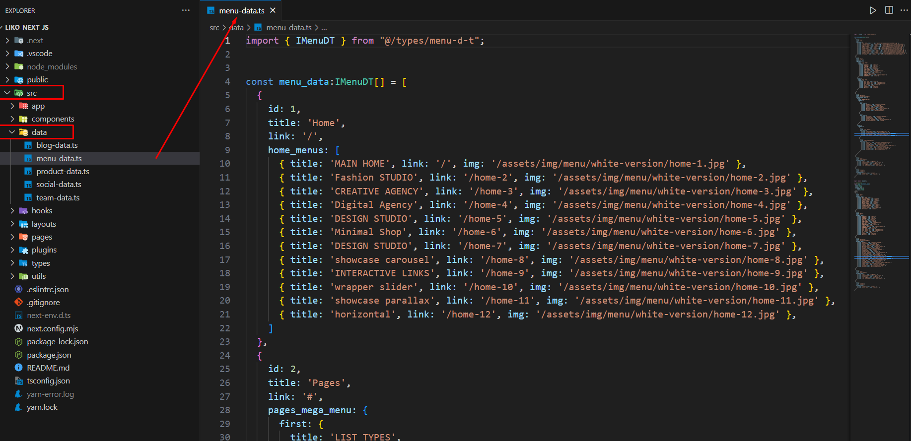
Customize the menu
Customize Footer
To customize footer data do the following:
From the project folder go to layout footersfooter-one.tsxOpen the menu you want to use
Then customize the footer data
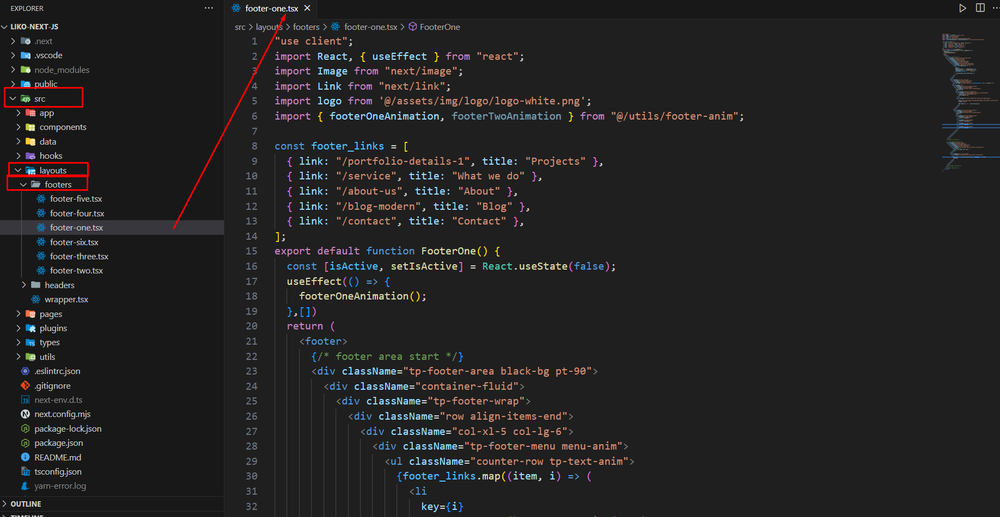
Customize the footer
Customize Blog data
To customize blog data do the following:
From the project folder go to src datablog-data.tsOpen the menu you want to use
Then customize the blog data
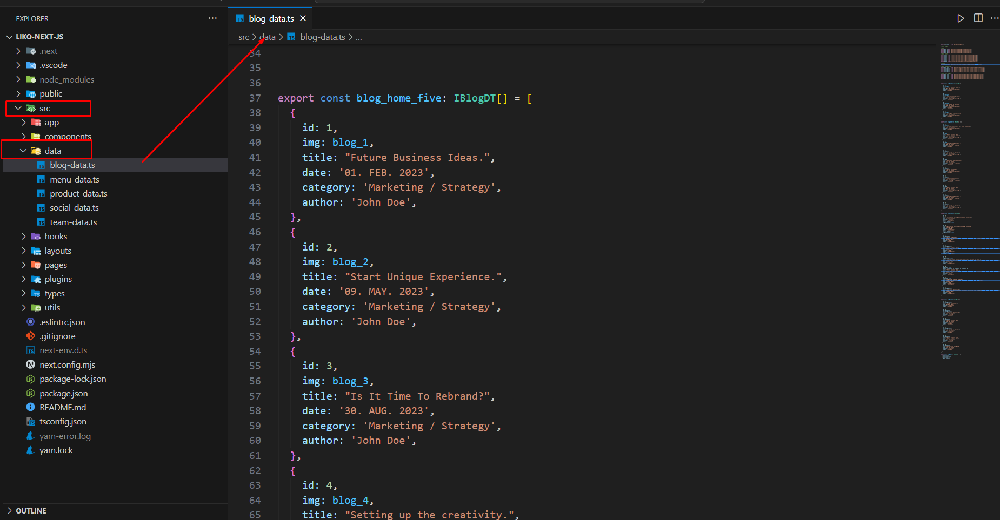
Customize the blog
Customize Product data
To customize product data do the following:
From the project folder go to src dataproduct-data.tsOpen the menu you want to use
Then customize the product data
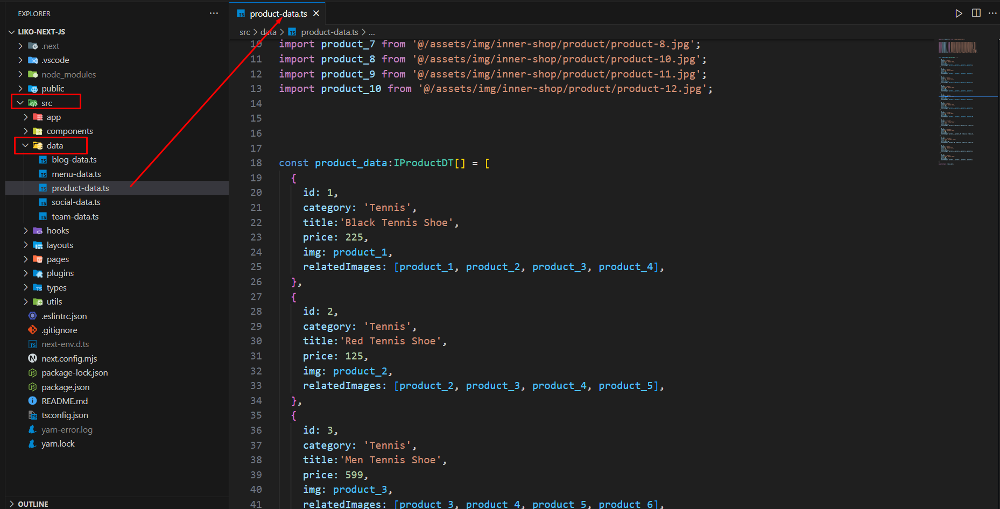
Customize the products
404
To change 404 and setting you can change by following this screenshot here.
From the project folder go to src appnot-found.tsxOpen the menu you want to use
Then customize the 404 data
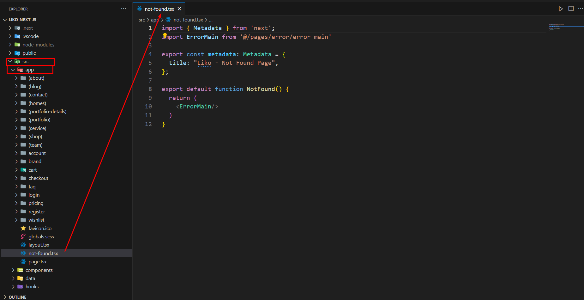
Customize the 404
Customize Header
We gave you four header layout. you can modify the header markup there.
From the project folder go to layout headersheaderOpen the menu you want to use
Then customize the blog data
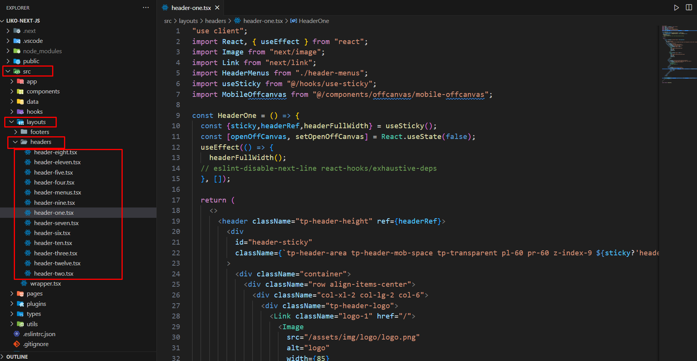
Customize the header
Colors
To change color and setting you can change by following this screenshot here.
From the project folder go to public assetsscssutils_colors.scssOpen the menu you want to use
Then customize the color data
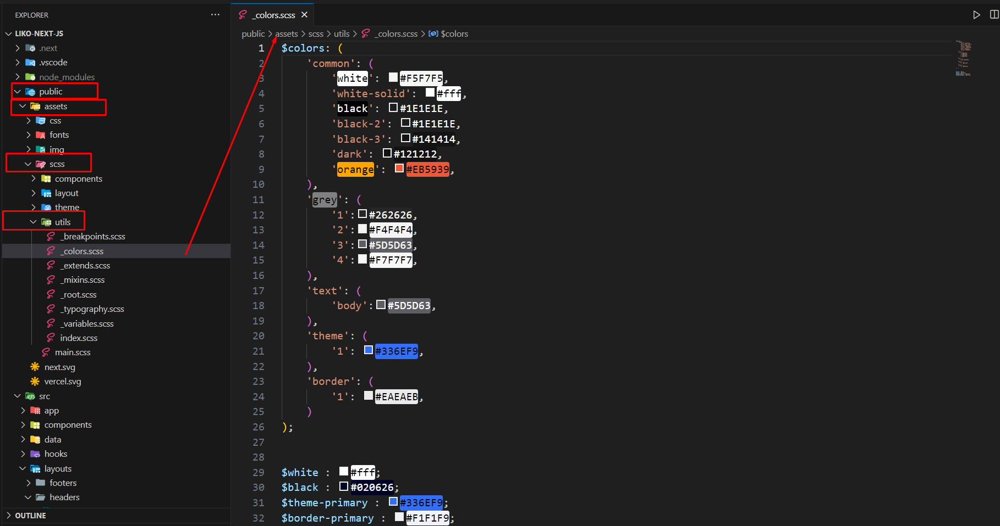
Customize the color
Typography
To change Typography and setting you can change by following this screenshot here.
From the project folder go to public assetsscsscomponentstheme.scssOpen the menu you want to use
Then customize the Typography data
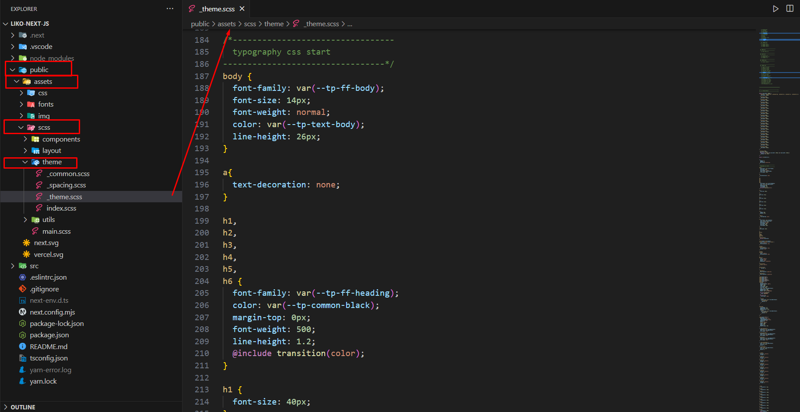
Customize the Typography
Support
If you face any issue please contact us at
Support Ticket. We provide 15 hours real-time support for our customers.